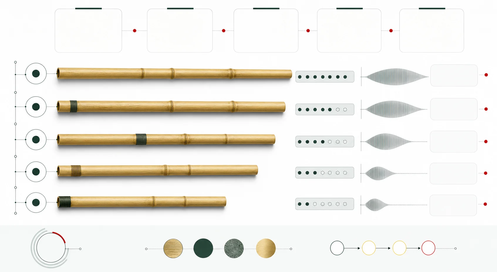

學位論文 · 2009
Woodwind doubling on folk, ethnic, and period instruments in film and theater music: case studies and a practical manual
Bret Pimentel
歷史與文化樂器分類曲目、作曲及演奏實踐指法與演奏技法
部分核實版權限制
主題索引
本頁彙集「相關樂器比較」的專題與參考資料。目前收錄 2 筆來源，可由下列文章開始閱讀，再回來源查考。
12 項已記錄核對的陳述 · 1149 字正文
本頁已達站內正文門檻，並附核對來源。層級只反映資料覆蓋的程度，並不等於外部專家認證；引用之前，仍請核對原文。來源數目按站內規則去重，相互引用的依賴關係，尚未逐一追查。
1 篇
2 筆
學位論文 · 2009
Bret Pimentel
機構網頁 · 2008-09
Department of Asian Art, The Metropolitan Museum of Art
